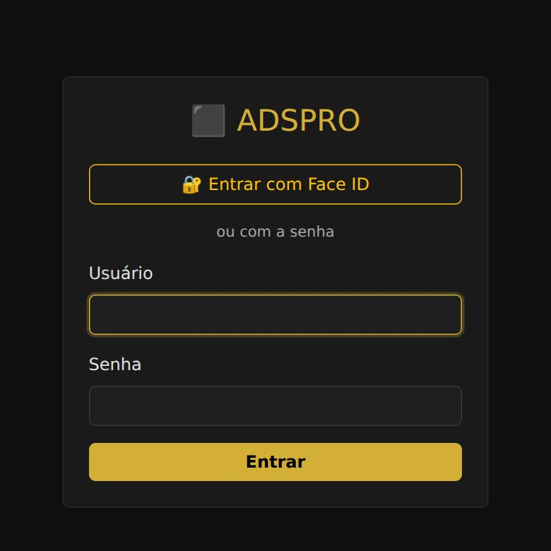
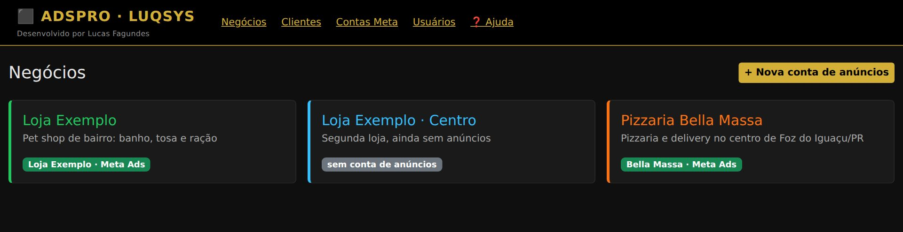
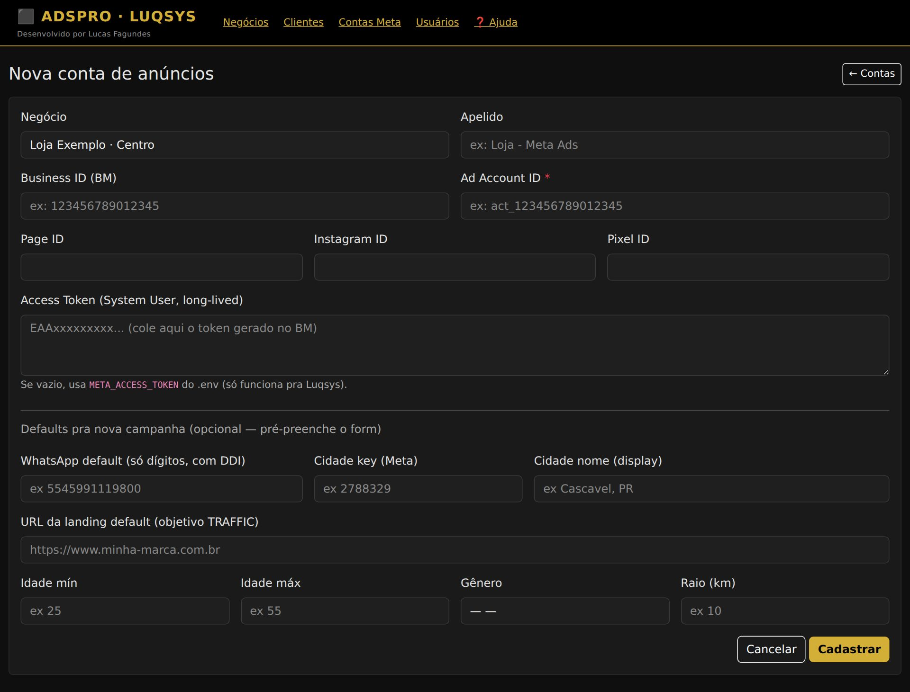
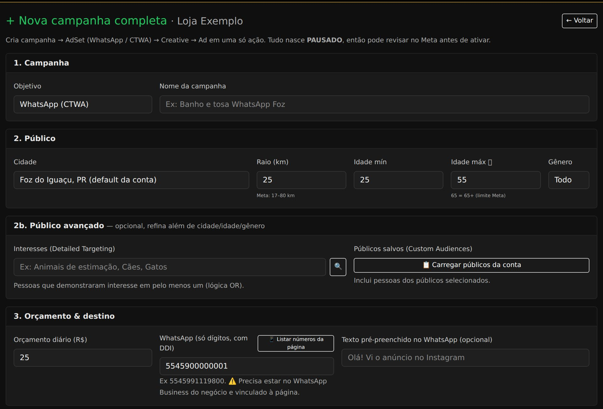
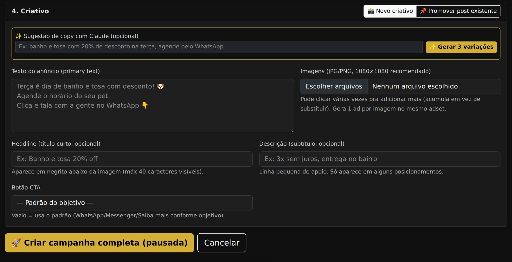
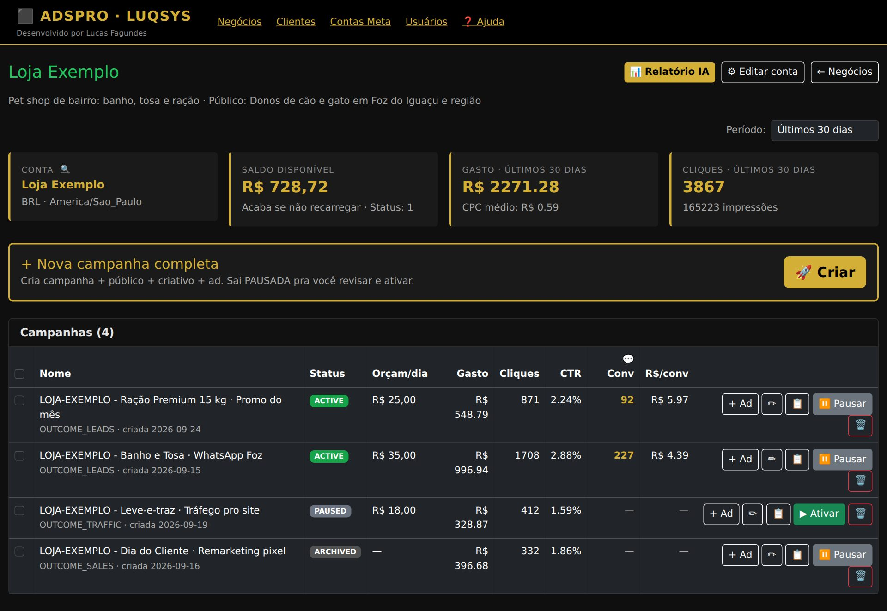
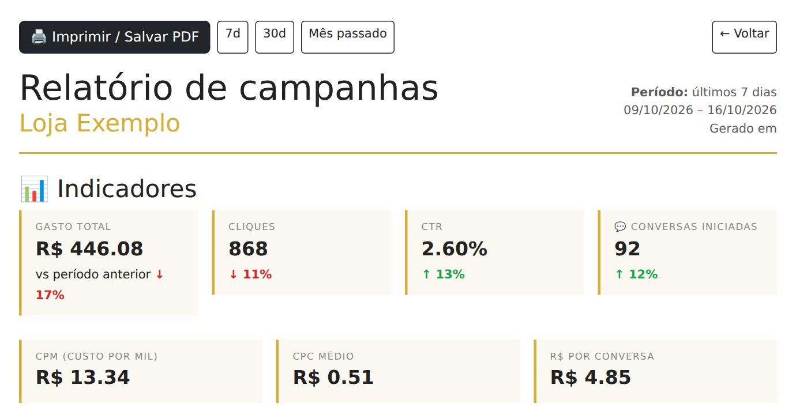
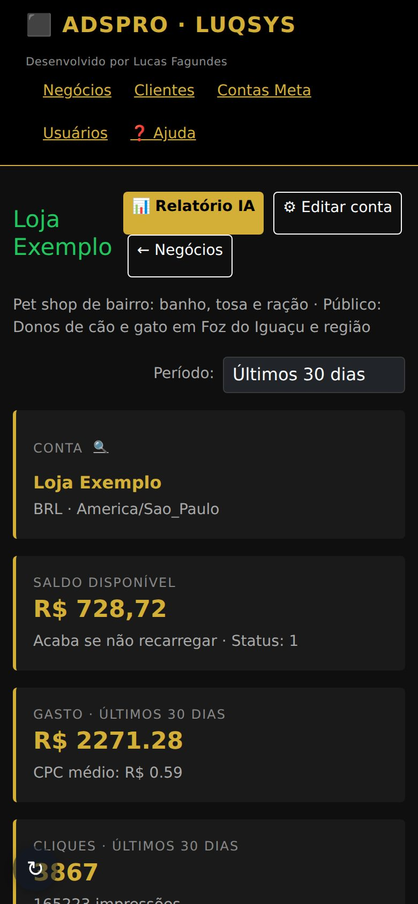

Do primeiro login até a primeira campanha no Facebook e no Instagram: conectar a conta de anúncios da Meta, montar público, orçamento e criativo, acompanhar os números e as dúvidas mais comuns.
Em adspro.luqsys.com.br, no navegador do celular ou do computador. É o mesmo sistema nos dois.
Depois de entrar, toque no 🔐 no topo e confirme. Na próxima vez, use Entrar com Face ID. Vale pro aparelho onde foi ativado, e a senha continua valendo.
Quem é admin troca a senha de qualquer login da equipe, inclusive a própria, em Usuários → Trocar senha (mínimo 6 caracteres). Não é admin? Peça pra um admin. A tela de login não tem "esqueci a senha": se você é o único admin, fale com o suporte.
Abra adspro.luqsys.com.br/instalar e siga o passo a passo do iPhone ou do Android. Fica com ícone na tela de início, igual um aplicativo.
No menu, ❓ Ajuda: tem busca (ex.: "token", "raio", "pausar") e o botão de falar com o suporte.

A tela inicial é Negócios. Cada cartão é um negócio. O selo verde é a conta de anúncios da Meta ligada a ele; sem conta de anúncios quer dizer que falta conectar. Não aparece o seu negócio? Fale com o suporte.

No negócio, + Vincular conta de anúncios, ou em Contas Meta → + Nova. Escolha o negócio e dê um apelido.
Ad Account ID é o único obrigatório, no formato act_ + números. Preencha também Page ID (página do Facebook), Instagram ID e Pixel ID, se tiver. Esses números ficam nas Configurações do negócio da Meta (business.facebook.com). Sem a página não dá pra listar posts nem números de WhatsApp.
Cole o token de acesso da Meta. É com ele que o AdsPro lê os números e cria as campanhas na sua conta.
WhatsApp, cidade, site, idade, gênero e raio que já vêm preenchidos em toda campanha nova. Toque em Cadastrar.
No painel do negócio, toque no 🔍 ao lado de "Conta". Aparece ✓ OK quando o token está valendo, ou ✗ inválido.

No painel do negócio, 🚀 Criar (Nova campanha completa). Uma tela só monta a campanha, o público, o orçamento e os anúncios.

| 1. Campanha | Objetivo e nome. O AdsPro põe o código do negócio na frente do nome. |
| 2. Público | Cidade (da lista, ou 🔍 Outra cidade, que a Meta procura na hora de criar), raio, idade e gênero. O raio vai de 17 a 80 km: fora disso o AdsPro ajusta pro limite e avisa. Idade máxima 65 quer dizer 65 ou mais. |
| 2b. Avançado | Opcional: interesses (a pessoa precisa ter pelo menos um) e públicos salvos da conta. |
| 3. Orçamento | Valor por dia, mínimo R$ 1,00. Quem cobra o gasto é a Meta, na forma de pagamento da conta de anúncios. |
| 3b. Agendamento | Opcional. Vazio, começa quando você ativar e roda até você pausar. |
| O anúncio abre uma conversa no WhatsApp do negócio. O número precisa estar ligado à página: use 📱 Listar números da página. Começa com 55 (DDI + DDD + número). | |
| Messenger | Abre uma conversa no Messenger da página. |
| Tráfego | Leva pro site. O endereço começa com http:// ou https://. |
| Conversões (Pixel) | Leva pro site e otimiza pela ação escolhida (compra, cadastro, carrinho...). Precisa do pixel no site: toque no ↻ e escolha o pixel e o evento. |


| Período | Hoje, ontem, 7, 14, 30 ou 90 dias, ou desde sempre. Os números vêm da Meta na hora em que a tela abre, inclusive o que foi mudado direto no Gerenciador de Anúncios. |
| Fatura em aberto | O que já foi gasto e a Meta ainda não cobrou no cartão. Em conta pré-paga aparece Saldo disponível, que acaba se não recarregar. |
| Na lista | Gasto, cliques, CTR (cliques ÷ impressões), 💬 Conv (conversas iniciadas no WhatsApp ou Messenger) e o custo por conversa. |
| ▶ Ativar / ⏸ Pausar | Liga e desliga a campanha na Meta. |
| ✏ Editar | Nome e orçamento diário. O orçamento novo vale pra todos os conjuntos da campanha. |
| 📋 Duplicar | Faz uma cópia, que nasce pausada. |
| + Ad | Mais um anúncio numa campanha que já existe (imagem nova ou post). Nasce pausado. |
| 🗑 Excluir | Exclui na Meta. Pelo AdsPro não volta: só pelo Gerenciador de Anúncios. Marque as caixinhas pra excluir várias de uma vez. |
No painel, 📊 Relatório IA. Escolha 7 dias, 30 dias ou mês passado. Mostra os indicadores comparados com o período anterior, um resumo escrito pela IA, as 3 campanhas com mais conversas, os 3 anúncios com maior CTR e próximos passos sugeridos. 🖨 Imprimir / Salvar PDF gera o arquivo.

